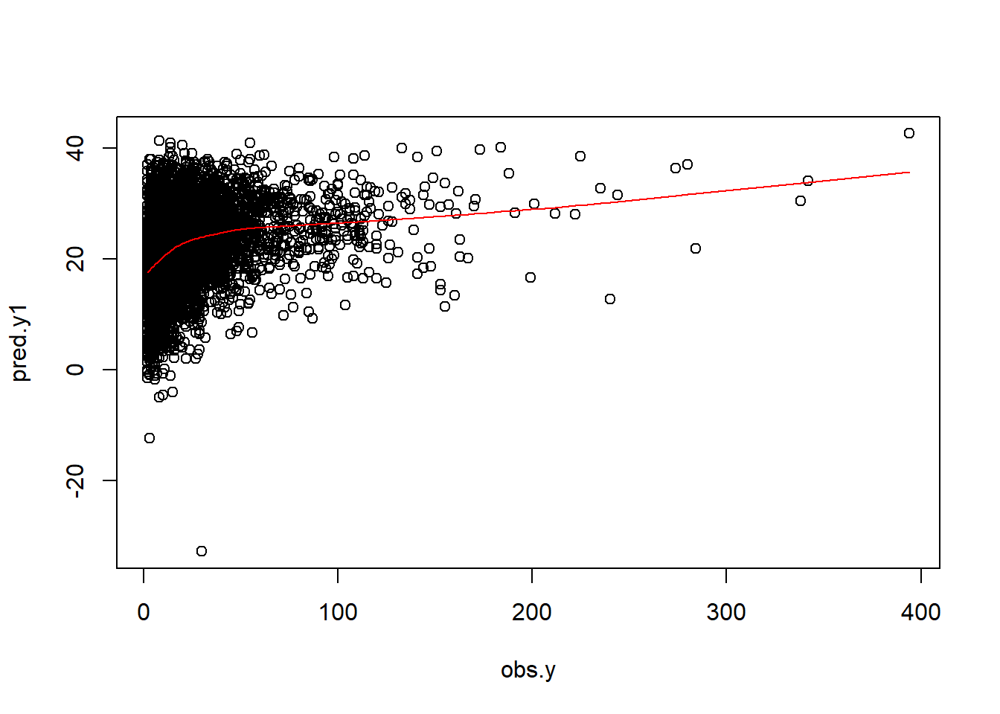

Continuous outcome
Important
This tutorial is very similar to one of the previous tutorials, but uses a different data (we used RHC data here). We are revisiting concepts related to prediction before introducing ideas related to machine learning.
In this chapter, we will talk about Regression that deals with prediction of continuous outcomes. We will use multiple linear regression to build the first prediction model.
Load dataset
Prediction for length of stay
Now, we show the regression fitting when outcome is continuous (length of stay).
Variables
baselinevars <- names(dplyr::select(ObsData,
!c(Length.of.Stay,Death)))
baselinevars
#> [1] "Disease.category" "Cancer" "Cardiovascular"
#> [4] "Congestive.HF" "Dementia" "Psychiatric"
#> [7] "Pulmonary" "Renal" "Hepatic"
#> [10] "GI.Bleed" "Tumor" "Immunosupperssion"
#> [13] "Transfer.hx" "MI" "age"
#> [16] "sex" "edu" "DASIndex"
#> [19] "APACHE.score" "Glasgow.Coma.Score" "blood.pressure"
#> [22] "WBC" "Heart.rate" "Respiratory.rate"
#> [25] "Temperature" "PaO2vs.FIO2" "Albumin"
#> [28] "Hematocrit" "Bilirubin" "Creatinine"
#> [31] "Sodium" "Potassium" "PaCo2"
#> [34] "PH" "Weight" "DNR.status"
#> [37] "Medical.insurance" "Respiratory.Diag" "Cardiovascular.Diag"
#> [40] "Neurological.Diag" "Gastrointestinal.Diag" "Renal.Diag"
#> [43] "Metabolic.Diag" "Hematologic.Diag" "Sepsis.Diag"
#> [46] "Trauma.Diag" "Orthopedic.Diag" "race"
#> [49] "income" "RHC.use"Model
out.formula1
#> Length.of.Stay ~ Disease.category + Cancer + Cardiovascular +
#> Congestive.HF + Dementia + Psychiatric + Pulmonary + Renal +
#> Hepatic + GI.Bleed + Tumor + Immunosupperssion + Transfer.hx +
#> MI + age + sex + edu + DASIndex + APACHE.score + Glasgow.Coma.Score +
#> blood.pressure + WBC + Heart.rate + Respiratory.rate + Temperature +
#> PaO2vs.FIO2 + Albumin + Hematocrit + Bilirubin + Creatinine +
#> Sodium + Potassium + PaCo2 + PH + Weight + DNR.status + Medical.insurance +
#> Respiratory.Diag + Cardiovascular.Diag + Neurological.Diag +
#> Gastrointestinal.Diag + Renal.Diag + Metabolic.Diag + Hematologic.Diag +
#> Sepsis.Diag + Trauma.Diag + Orthopedic.Diag + race + income +
#> RHC.use
adj.fit1Design Matrix
- Notations
- n is number of observations
- p is number of covariates
Expands factors to a set of dummy variables.
head(model.matrix(fit1))
#> (Intercept) Disease.categoryCHF Disease.categoryOther Disease.categoryMOSF
#> 1 1 0 1 0
#> 2 1 0 0 1
#> 3 1 0 0 1
#> 4 1 0 0 0
#> 5 1 0 0 1
#> 6 1 0 1 0
#> CancerLocalized (Yes) CancerMetastatic Cardiovascular1 Congestive.HF1
#> 1 1 0 0 0
#> 2 0 0 1 1
#> 3 1 0 0 0
#> 4 0 0 0 0
#> 5 0 0 0 0
#> 6 0 0 0 1
#> Dementia1 Psychiatric1 Pulmonary1 Renal1 Hepatic1 GI.Bleed1 Tumor1
#> 1 0 0 1 0 0 0 1
#> 2 0 0 0 0 0 0 0
#> 3 0 0 0 0 0 0 1
#> 4 0 0 0 0 0 0 0
#> 5 0 0 0 0 0 0 0
#> 6 0 0 1 0 0 0 0
#> Immunosupperssion1 Transfer.hx1 MI1 age[50,60) age[60,70) age[70,80)
#> 1 0 0 0 0 0 1
#> 2 1 1 0 0 0 1
#> 3 1 0 0 0 0 0
#> 4 1 0 0 0 0 1
#> 5 0 0 0 0 1 0
#> 6 0 0 0 0 0 0
#> age[80, Inf) sexFemale edu DASIndex APACHE.score Glasgow.Coma.Score
#> 1 0 0 12.000000 23.50000 46 0
#> 2 0 1 12.000000 14.75195 50 0
#> 3 0 1 14.069916 18.13672 82 0
#> 4 0 1 9.000000 22.92969 48 0
#> 5 0 0 9.945259 21.05078 72 41
#> 6 1 1 8.000000 17.50000 38 0
#> blood.pressure WBC Heart.rate Respiratory.rate Temperature
#> 1 41 22.09765620 124 10 38.69531
#> 2 63 28.89843750 137 38 38.89844
#> 3 57 0.04999542 130 40 36.39844
#> 4 55 23.29687500 58 26 35.79688
#> 5 65 29.69921880 125 27 34.79688
#> 6 115 18.00000000 134 36 39.19531
#> PaO2vs.FIO2 Albumin Hematocrit Bilirubin Creatinine Sodium Potassium PaCo2
#> 1 68.0000 3.500000 58.00000 1.0097656 1.1999512 145 4.000000 40
#> 2 218.3125 2.599609 32.50000 0.6999512 0.5999756 137 3.299805 34
#> 3 275.5000 3.500000 21.09766 1.0097656 2.5996094 146 2.899902 16
#> 4 156.6562 3.500000 26.29688 0.3999634 1.6999512 117 5.799805 30
#> 5 478.0000 3.500000 24.00000 1.0097656 3.5996094 126 5.799805 17
#> 6 184.1875 3.099609 30.50000 1.0097656 1.3999023 138 5.399414 68
#> PH Weight DNR.statusYes Medical.insuranceMedicare
#> 1 7.359375 64.69995 0 1
#> 2 7.329102 45.69998 0 0
#> 3 7.359375 0.00000 0 0
#> 4 7.459961 54.59998 0 0
#> 5 7.229492 78.39996 1 1
#> 6 7.299805 54.89999 0 1
#> Medical.insuranceMedicare & Medicaid Medical.insuranceNo insurance
#> 1 0 0
#> 2 0 0
#> 3 0 0
#> 4 0 0
#> 5 0 0
#> 6 0 0
#> Medical.insurancePrivate Medical.insurancePrivate & Medicare
#> 1 0 0
#> 2 0 1
#> 3 1 0
#> 4 0 1
#> 5 0 0
#> 6 0 0
#> Respiratory.DiagYes Cardiovascular.DiagYes Neurological.DiagYes
#> 1 1 1 0
#> 2 0 0 0
#> 3 0 1 0
#> 4 1 0 0
#> 5 0 1 0
#> 6 1 0 0
#> Gastrointestinal.DiagYes Renal.DiagYes Metabolic.DiagYes Hematologic.DiagYes
#> 1 0 0 0 0
#> 2 0 0 0 0
#> 3 0 0 0 0
#> 4 0 0 0 0
#> 5 0 0 0 0
#> 6 0 0 0 0
#> Sepsis.DiagYes Trauma.DiagYes Orthopedic.DiagYes raceblack raceother
#> 1 0 0 0 0 0
#> 2 1 0 0 0 0
#> 3 0 0 0 0 0
#> 4 0 0 0 0 0
#> 5 0 0 0 0 0
#> 6 0 0 0 0 0
#> income$25-$50k income> $50k incomeUnder $11k RHC.use
#> 1 0 0 1 0
#> 2 0 0 1 1
#> 3 1 0 0 1
#> 4 0 0 0 0
#> 5 0 0 1 1
#> 6 0 0 1 0
dim(model.matrix(fit1))
#> [1] 5735 64
p <- dim(model.matrix(fit1))[2] # intercept + slopes
p
#> [1] 64Obtain prediction
obs.y <- ObsData$Length.of.Stay
summary(obs.y)
#> Min. 1st Qu. Median Mean 3rd Qu. Max.
#> 2.00 7.00 14.00 21.56 25.00 394.00
# Predict the above fit on ObsData data
pred.y1 <- predict(fit1, ObsData)
summary(pred.y1)
#> Min. 1st Qu. Median Mean 3rd Qu. Max.
#> -32.76 16.62 21.96 21.56 26.73 42.67
n <- length(pred.y1)
n
#> [1] 5735
plot(obs.y,pred.y1)
lines(lowess(obs.y,pred.y1), col = "red")
Measuring prediction error
Prediction error measures how well the model can predict the outcome for new data that were not used in developing the prediction model.
- Bias reduced for models with more variables
- Unimportant variables lead to noise / variability
- Bias variance trade-off / need penalization
R2
The provided information describes a statistical context involving a dataset of n values, \(y_1, ..., y_n\) (referred to as \(y_i\) or as a vector \(y = [y_1,...,y_n]^T\)), each paired with a fitted value \(f_1,...,f_n\) (denoted as \(f_i\) or sometimes \(\hat{y_i}\), and as a vector \(f\)). The residuals, represented as \(e_i\), are defined as the differences between the observed and the fitted values: $ e_i = y_i − f_i$
The mean of the observed data is denoted by \[ \bar{y} = \frac{1}{n}\sum_{i=1}^{n}y_i \]
The variability of the dataset can be quantified using two sums of squares formulas: 1. Residual Sum of Squares (SSres) or SSE: It quantifies the variance remaining in the data after fitting a model, calculated as: \[ SS_{res} = \sum_{i}(y_i - f_i)^2 = \sum_{i}e_i^2 \] 2. Total Sum of Squares (SStot) or SST: It represents the total variance in the observed data, calculated as: \[ SS_{tot} = \sum_{i}(y_i - \bar{y})^2 \]
The Coefficient of Determination (R²) or R.2, which provides a measure of how well the model’s predictions match the observed data, is defined as: \[ R^2 = 1 - \frac{SS_{res}}{SS_{tot}} \]
In the ideal scenario where the model fits the data perfectly, we have \(SS_{res} = 0\) and thus \(R^2 = 1\). Conversely, a baseline model, which always predicts the mean \(\bar{y}\) of the observed data, would yield \(R^2 = 0\). Models performing worse than this baseline model would result in a negative R² value. This metric is widely utilized in regression analysis to evaluate model performance, where a higher R² indicates a better fit of the model to the data.
RMSE
See (Wikipedia 2023b)
Adj R2
The Adjusted R² statistic modifies the \(R^2\) value to counteract the automatic increase of \(R^2\) when extra explanatory variables are added to a model, even if they do not improve the model fit. This adjustment is crucial for ensuring that the metric offers a reliable indication of the explanatory power of the model, especially in multiple regression where several predictors are involved.
The commonly used formula is defined as:
\[ \bar{R}^{2} = 1 - \frac{SS_{\text{res}} / df_{\text{res}}}{SS_{\text{tot}} / df_{\text{tot}}} \]
Where:
- \(SS_{\text{res}}\) and \(SS_{\text{tot}}\) represent the residual and total sums of squares respectively.
-
\(df_{\text{res}}\) and \(df_{\text{tot}}\) refer to the degrees of freedom of the residual and total sums of squares. Usually, \(df_{\text{res}} = n - p\) and \(df_{\text{tot}} = n - 1\), where:
- \(n\) signifies the sample size.
- \(p\) denotes the number of variables in the model.
This metric plays a vital role in model selection and safeguards against overfitting by penalizing the inclusion of non-informative variables
The alternate formula is:
\[ \bar{R}^2 = 1 - (1 - R^2) \frac{n-1}{n-p-1} \]
This formula modifies the \(R^2\) value, accounting for the number of predictors and offering a more parsimonious model fit measure.
See (Wikipedia 2023a)
Overfitting and Optimism
- Model usually performs very well in the empirical data where the model was fitted in the same data (optimistic)
- Model performs poorly in the new data (generalization is not as good)
Causes
- Model determined by data at hand without expert opinion
- Too many model parameters (\(age\), \(age^2\), \(age^3\)) / predictors
- Too small dataset (training) / data too noisy
Consequences
- Overestimation of effects of predictors
- Reduction in model performance in new observations
Proposed solutions
We generally use procedures such as
- Internal validation
- sample splitting
- cross-validation
- bootstrap
- External validation
- Temporal
- Geographical
- Different data source to calculate same variable
- Different disease
Video content (optional)
Tip
For those who prefer a video walkthrough, feel free to watch the video below, which offers a description of an earlier version of the above content.
References
Wikipedia. 2023a. “Coefficient of Determination.” https://en.wikipedia.org/wiki/Coefficient_of_determination.
———. 2023b. “One-Way Analysis of Variance.” https://en.wikipedia.org/wiki/One-way_analysis_of_variance.